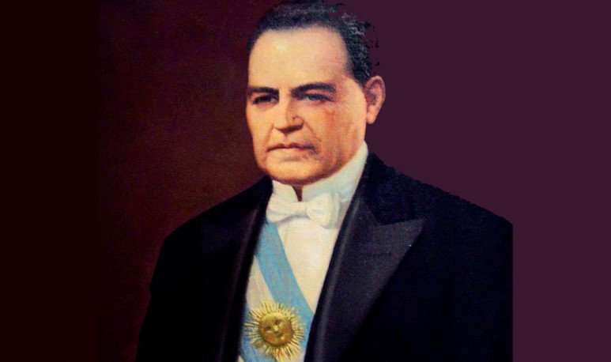
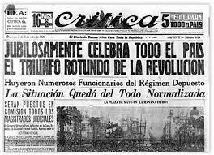
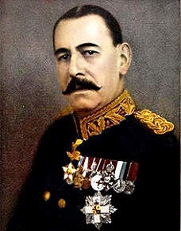
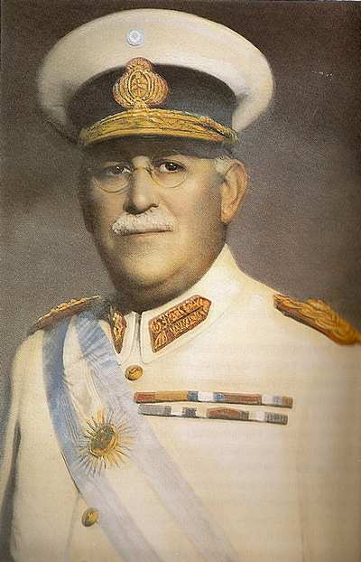

Golpes de Estado
Golpe de Estado de 1930
El presidente radical Hipólito Yrigoyen, que gobernó el país desde 1916 hasta 1922, volvería a triunfar las
elecciones de 1928 y asumiría nuevamente al poder.

Hipólito Yrigoyen
Fue un político argentino y dos veces presidente de la Nación
Argentina. Fue el primer presidente argentino elegido por medio del sufragio secreto y obligatorio masculino.
En su segundo mandato, Yrigoyen tuvo que enfrentar la oposición de los conservadores, de los socialistas e incluso la de los
radicales antiperonistas, que lo criticaban por ser "personalista". Un ejemplo de esto, era el creador del diario 'La Crítica', Natalio Botana quien era detractor
de Yrigoyen; es decir, que no le gustaba sus ideas, sus políticas, etc.

El diario Crítica, un día después del golpe de Estado, celebrando la salida de los funcionarios de Yrigoyen y la llegada de Uriburu a la presidencia.
El 6 de septiembre de 1930, estallaría un golpe de Estado comandado por el militar José Félix Uriburu, quien
derrocaría al presidente y posteriormente tomaría el poder más tarde.

José Félix Uriburu
Fue un militar, dictador y político argentino que alcanzó el grado de teniente general.
Este hecho es considerado como el primer golpe de Estado que ocurrió en Argentina y el primero de una serie que se extendería hasta 1983.
La dictadura de Uriburu reprimió con dureza la disidencia por parte de los grupos radicales, comunistas y anarquistas,
y tuvo como objetivo último instaurar un régimen corporativista.
Durante el gobierno de Uriburu:
- Declaró el estado de sitio (Mecansimo contemplado en la Constitución en caso de que exista alguna situación extraordinaria. Por ejemplo:
una catástrofe natural, una perturbación grave del orden interno o en caso de guerra exterior).
- Estableció un régimen represivo que incluyó por primera vez la utilización sistemática de la tortura contra los opositores políticos, en particular
anarquistas, comunistas y radicales yrigoyenistas.
- Encarceló a varios dirigentes políticos (entre ellos al expresidente Hipólito Yrigoyen)
- Impuso la censura a los diarios.
- En el plano económico, la depresión mundial incidió en el país y ocasionó una gran disminución de los ingresos, la caída del consumo y el crecimiento de la desocupación.
- Quiso implantar un gobierno neo-corporativista, similar al fascismo, régimen en el que veía un ejemplo de paz y
orden político del cual se podían aprender útiles lecciones. A pesar de estas intenciones, el rechazo de las élites civiles al proyecto de Uriburu
y una victoria electoral radical en comicios más tarde anulados en la provincia de Buenos Aires condujeron al gobierno militar a
iniciar un proceso de normalización institucional.
Luego de que Uriburu dejara el cargo dos años después, asumiría en su lugar el militar Agustín Pedro Justo.

Fue un ingeniero, militar, diplomático y político radical argentino. Fue presidente de su país entre 1932 y 1938.